一个简单的神经网络
Tensorflow游乐场
http://playground.tensorflow.org
概念与名词解释
LAYER
- HIDDEN LAYERS
- 隐藏层
- 输入层
- 输出层
- FEATURES
- 输入数据方式
- NEURON
- 神经元
- Bias
- 偏置值
- Weight
- 权重
- HIDDEN LAYERS
DATA
- TEST DATA
- 测试数据占比
- Noise
- 噪音
- Batch Size
- 批次数量
- TEST DATA
OUTPUT
Loss
- 损失（代价）函数
- 来描述拟合与真实观测的差异，是用来衡量人工神经网络（ANN）的预测值与实际值的一种方式
- 种类
- 二次代价函数
- 交叉熵代价函数
- 对数似然损失函数
- ....
Test Loss
- 测试数据Loss
Training Loss
- 训练数据Loss
拟合
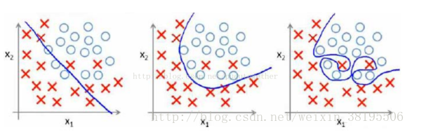
- 欠拟合
- 过拟合
- 过拟合是指为了得到一致假设而使假设变得过度严格
- 表现为在训练数据上有很低的Loss,但在测试数据上有很高的Loss
- 防止过拟合的方法
- 增大数据集
- 正则化
- Dropout
PARAMS
Epoch
- 训练次数
Learning rate
学习率
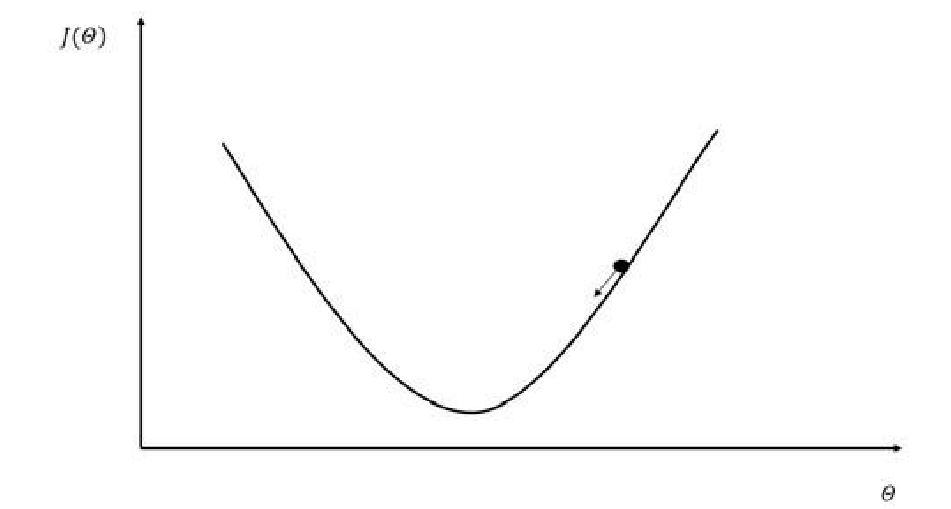

Activation
激活函数
激活函数是神经网络的一个重要组成部分。如果不用激活函数（即相当于激活函数为f(x)=x），在这种情况下，网络的每一层的输入都是上一层的线性输出，因此，无论该神经网络有多少层，最终的输出都是输入的线性组合，与没有隐藏层的效果相当，这种情况就是最原始的感知机。
Sigmoid
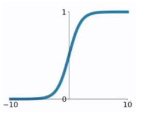
tanh
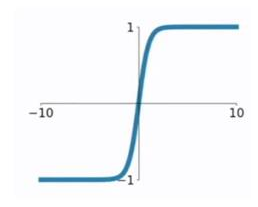
ReLU
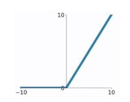
Linear
softmax
Regularization
- 正则化
- 损失函数里，加入对每个参数的惩罚度
- L2
- L1
- 正则化
Regularizateion rate
- 正则化率
Problem type
- 问题类型
核心算法
前向传播算法
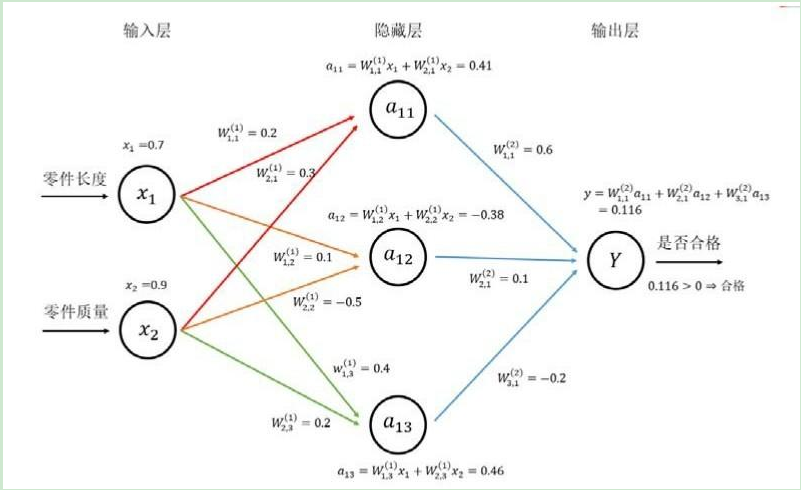
优化算法
反向传播算法
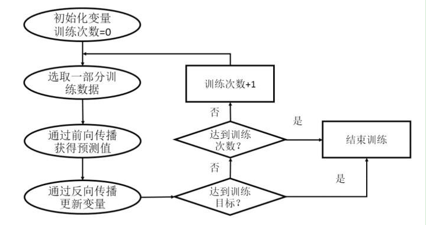
梯度下降算法
梯度下降法是一种致力于找到函数极值点的算法，在机器学习中，我们一般通过这种方法获取模型参数，从而求得目标函数或代价函数的极值
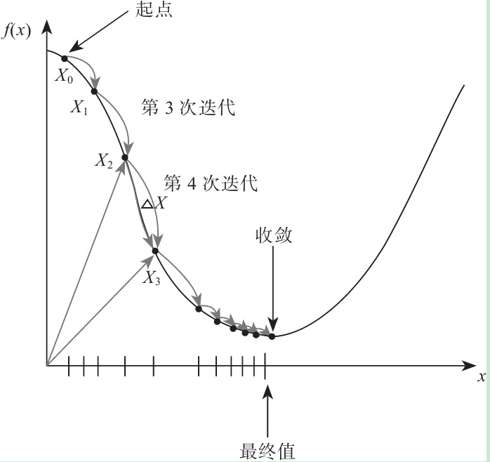
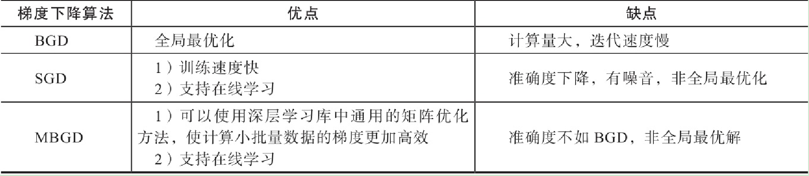
 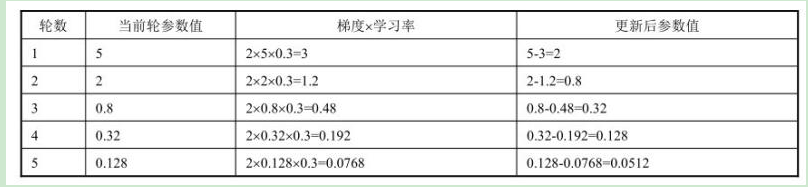
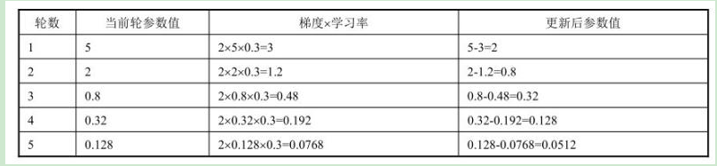